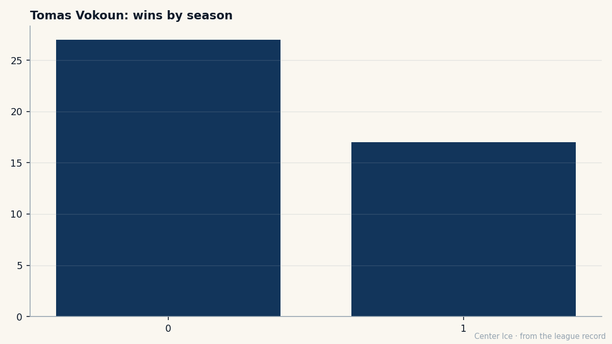

The Door Holds: Vokoun and the seven games Nashville is running
Fifteen wins in 25, a 7-game streak alive, and a goalie who says the streak is the room's. What the number means when the man in net won't take the credit.
 Carol BinghamFeatures writer · Rinkside
Carol BinghamFeatures writer · RinksideThe Predators have won seven straight, and  Tomas Vokoun92 will not let you call it his. "The streak is the room's. I just hold the door, you know," he told The Tunnel's Marcus Bell after the 4-3 win over
Tomas Vokoun92 will not let you call it his. "The streak is the room's. I just hold the door, you know," he told The Tunnel's Marcus Bell after the 4-3 win over  Minnesota Wild on Thursday. He said it the way a man describes weather: it happens, you live in it, you don't own it.
Minnesota Wild on Thursday. He said it the way a man describes weather: it happens, you live in it, you don't own it.
That is the thing about a streak. It belongs to everyone in the building and no one in particular. The fans who show up on a Tuesday in December when the scoreboard reads 3-2 and the third period has four minutes left. The defencemen who clear the puck and stay in front. The centre who takes the draw and feeds the backdoor. Vokoun sees all of it from the net. He sees the bench. "And they are calm," he said. "That is the thing."
Fifteen wins in 25 games. The  Nashville Predators sit at 40 points with 30 played, 119 goals for, 106 against. Last year this club finished 38-30, 100 points, and lost in the second round. This year the start is different. The goal differential is positive for the first time in a long while, and the wins are coming in a run rather than a scatter.
Nashville Predators sit at 40 points with 30 played, 119 goals for, 106 against. Last year this club finished 38-30, 100 points, and lost in the second round. This year the start is different. The goal differential is positive for the first time in a long while, and the wins are coming in a run rather than a scatter.

Vokoun was the 226th pick in the 1994 draft. Eighth round. The kind of number that means a player's file is a single page in a stack of hundreds, and the scouts who saw him saw a body and a glove hand and a guess. Twenty-six games this season, 15 wins, 10 losses, a 2.99 goals against average and a .853 save percentage. The Book has him at 92, which is a number that should mean the league knows who he is. It does. The question is whether the streak changes what the number means, or whether the number was always the right one and the streak is just the room finally matching him.
He has been through this before. Last year, 68 games, 39 wins, 2 shutouts, a 2.88 average. A full season in a net that was asked to hold a team together through a long December and a longer January. The body does what the body does. "My legs, they are okay," he said, and then trailed off, the way a man trails off when the answer is yes and the question was whether it should be.
The Predators' last ten games read like a sentence: seven wins, a loss, an overtime loss, a loss, a win. The streak broke and came back, which is rarer than people credit. A team that breaks a streak and does not find it again is a team that was never really winning. A team that finds it again has something in the room that is not just a line on a scoreboard.
Vokoun's line is 15. He looks at it the way a man looks at a door he is standing in. Not the door that opens onto the good room, but the door that keeps the cold out. "I see the puck, I make the save, and the boys in front, they clear it. That is all I can do, you know." He said it flat, no performance in it. The kind of sentence a player says when he has said it 25 times this season and it is still true.
The streak will end. Every streak does. The question the room is answering, one shift at a time, is what happens after. Whether the calm he sees from the net stays when the scoreboard stops going the right way. Whether the legs hold in February when the body has been asked for 60 more games. Whether the 226th pick from 1994 is still the right man for the door.
Right now, in the middle of seven, the answer is yes. The door holds.